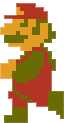
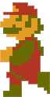

SUPER MARIO BROS.
Oct. 18, 1985
One day the kingdom of the peaceful mushroom people was invaded by the Koopa, a tribe of turtles famous for their black magic. The quiet, peace-loving Mushroom People were turned into mere stones, bricks and even field horsehair plants, and the Mushroom Kingdom fell into ruin.
The only one who can undo the magic spell on the Mushroom People and return them to their normal selves is the Princess Toadstool, the daughter of the Mushroom King. Unfortunately, she is presently in the hands of Bowser, the King of the Koopa.
Mario hears about the Mushroom People’s plight and sets out on a quest to free the Mushroom Princess from the evil Koopa and restore the fallen kingdom of the Mushroom People.
You are Mario! It’s up to you to save the Mushroom People from the black magic of the Koopa!
SUPER MARIO BROS. 2
Oct. 9, 1988

One evening, Mario had a strange dream. He dreamt of a long, long stairway leading up to a door. As soon as the door opened, he was confronted with a world he had never seen before spreading out as far as his eyes could see. When he strained his ears to listen, he heard a faint voice saying, "Welcome to Subcon, the land of dreams. We have been cursed by Wart and we are completely under his evil spell. We have been awaiting your arrival. Please defeat Wart and return Subcon to its natural state. The curse Wart has put on you in the real world will not have any effect upon you here. Remember, Wart hates vegetables. Please help us!"
At the same time this was heard, a bolt of lightning flashed before Mario’s eyes. Stunned, Mario lost his footing and tumbled upside down. He awoke with a start to find himself sitting up in his bed. To clear his head, Mario talked to Luigi, Toad and Princess Peach about the strange dream he had. They decided to go to a nearby mountain for a picnic.
After arriving at the picnic area and looking at the scenery, they see a small cave nearby. When they enter this cave, to their great surprise, there’s a stairway leading up, up and up. It is exactly like the one Mario saw in his dream. They all walk together up the stairs and at the top, find a door just like the one in Mario’s dream. When Mario and his friends, in fear, open the door, to their surprise, the world that he saw in his dream spreads out before them!
SUPER MARIO LAND
Aug. 11, 1989
Once upon a time, there was a peaceful world called Sarasaland. In this world there were 4 kingdoms named Birabuto, Muda, Easton and Chai.
One day, the skies of Sarasaland were suddenly covered by a huge black cloud. From a crack in this cloud, the unknown space monster Tatanga emerged to try to conquer Sarasaland.
Tatanga hypnotized the people of all the kingdoms so that he could control them in any way he liked. In this way he took over Sarasaland. Now, he wants to marry Princess Daisy of Sarasaland and make her his queen.
Mario came to know of these events, and he has started on a journey to the Chai Kingdom where Princess Daisy is held captive, in order to restore peace to Sarasaland.
Can Mario defeat Tatanga, release people from his interstellar hypnosis, and rescue Princess Daisy? It's all up to you and Mario's skill. Go for it Mario!
SUPER MARIO BROS. 3
Feb. 12, 1990
The Mushroom Kingdom has been a peaceful place thanks to the brave deeds of Mario and Luigi. The Mushroom Kingdom forms an entrance to the Mushroom World where all is not well. Bowser has sent his 7 children to make mischief as they please in the normally peaceful Mushroom World.
They stole the royal magic wands from each country in the Mushroom World and used them to turn their kings into animals. Mario and Luigi must recover the royal magic wands from Bowser’s 7 kids to return the kings to their true forms. “Goodbye and good luck!” said the Princess and Toad as Mario and Luigi set off on their journey deep into the Mushroom World.
SUPER MARIO WORLD
Aug. 13, 1991

Having returned peace to Mushroom World, Mario and Luigi decide to take a leisurely vacation with Princess Peach. They set out for Yoshi’s Island in the magical island nation of Dinosaur Land far to the south.
But soon after arriving on the island, Princess Peach suddenly disappears. As Mario and Luigi desperately search for her, they discover a strange egg on the outskirts of the island. Then, before their very eyes, an odd little dragon hatches! The dragon calls himself Yoshi and says, "Monstrous turtles recently appeared here in this Dinosaur Land. They have used magic to seal my friends inside eggs. I tried to help them, but the turtles are incredibly strong and cast a spell on me, too… Will you please come with me to rescue my friends?"
What can this mean? Apparently, Bowser hasn’t learned his lesson, so it appears that his minions have yet again kidnapped Princess Peach.
Mario and Luigi begin another adventure in hopes of rescuing Yoshi’s pals and Princess Peach!
SUPER MARIO LAND 2: 6 GOLDEN COINS
Nov. 2, 1992
Danger! Danger!
While I was away crusading against the mystery alien Tatanga in Sarasa Land, an evil creep took over my castle and put the people of Mario Land under his control with a magic spell. This intruder goes by the name of Wario. He mimics my appearance, and has tried to steal my castle many times. It seems he has succeeded this time.
Wario has scattered the 6 Golden Coins from my castle all over Mario Land. These Golden Coins are guarded by those under Wario's spell. Without these coins, we can't get into the castle to deal with Wario. We must collect the 6 coins, attack Wario in the castle, and save everybody!
It’s time to set out on our mission!!
NEW SUPER MARIO BROS.
May. 15, 2006
Emergency News Flash!
Princess Peach has been kidnapped! While enjoying a picnic with Mario, the beloved ruler of the Mushroom Kingdom was whisked away by an unknown assailant. How could this happen with Mario around?
According to Mario, the walk was going swimmingly when Mario and the princess spotted smoke billowing out of Peach’s Castle. The mustachioed marvel immediately jumped into action and sped off toward the fire. The moment he left her side, the princess vanished!
Who’s behind Princess Peach’s disappearance? Who’s behind the attack on Peach’s Castle? Are the two incidents related? Didn’t Bowser Jr. once think Princess Peach might be his mother?
Looks like Mario’s going to need all the Mega Mushrooms he can find to get to the bottom of this mess.
NEW SUPER MARIO BROS. Wii
Nov. 15, 2009

Today is Princess Peach’s birthday, so her castle is full of presents. Mario and Luigi are there, and they’re celebrating with the Toads and Princess Peach when a huge birthday cake arrives. Who in the world could it be from?
Today is Princess Peach’s birthday, so her castle is full of presents. Mario and Luigi are there, and they’re celebrating with the Toads and Princess Peach when a huge birthday cake arrives. Who in the world could it be from?
Suddenly, Bowser Jr. and minions jump out of the cake. Everyone is shocked and pandemonium ensues. In a flash, the invaders snatch Princess Peach and fly away in a giant Airship.
The Toads are in a panic! Mario and Luigi—and Yellow Toad, Blue Toad and Yoshi too!—pursue the Airship in order to rescue Princess Peach.
Together, the four head out on an adventurous journey!
Suddenly, Bowser Jr. and minions jump out of the cake. Everyone is shocked and pandemonium ensues. In a flash, the invaders snatch Princess Peach and fly away in a giant Airship.
The Toads are in a panic! Mario and Luigi—and Yellow Toad, Blue Toad and Yoshi too!—pursue the Airship in order to rescue Princess Peach.
Together, the four head out on an adventurous journey!
NEW SUPER MARIO BROS. 2
Aug. 19, 2012
Mario and Luigi visit Princess Peach’s Castle. As usual, they enjoy chatting with Princess Peach about their adventures. As Princess Peach waves farewell, Mario and Luigi use tail transformations to snag a bunch of Coins from the sky. No sooner do they land for a break than a black shadow approaches overhead. They hear a loud boom as Bowser’s minions appear in an aircraft and slam to the ground right on top of them. In surprise, they stare as Princess Peach appears and calls for help. She’s been kidnapped again! The heroes set out in pursuit and a new adventure begins!
NEW SUPER MARIO BROS. U
Nov. 18, 2012
Bowser’s gang has taken over Princess Peach’s Castle! This time, the goal of the journey is Peach’s occupied castle!
SUPER MARIO MAKER
Sept. 11, 2015 / Dec. 2, 2016
Combine parts—Blocks, Goombas, Pipes and more—to create your own Super Mario Bros. courses! Then you can share them online, play courses others have made, and have all sorts of fun. Super Mario Maker for Nintendo 3DS includes lessons from Yamamura explaining course design.
SUPER MARIO RUN
Dec. 15, 2016
Bowser has kidnapped Princess Peach, so run, jump and overcome as you race to the rescue! Mario has leapt out of game consoles and into your smartphone. Tap to control him as he runs for Bowser’s Castle!
New Super Mario Bros.™ U Deluxe
Jan. 11, 2019
Join Mario, Luigi, and pals for single-player or multiplayer fun anytime, anywhere! Take on two family-friendly, side-scrolling adventures as you try to save the Mushroom Kingdom. Includes the New Super Mario Bros. U and harder, faster New Super Luigi U games—both of which include Nabbit and Toadette as playable characters!
SUPER MARIO MAKER 2
Jun. 28, 2019
Dive into the single-player Story Mode and play built-in courses to rebuild Princess Peach’s castle. Make your own courses, alone or together. And with a Nintendo Switch Online membership, share your courses, access a near-endless supply made by others, enjoy online multiplayer, and more!


 
